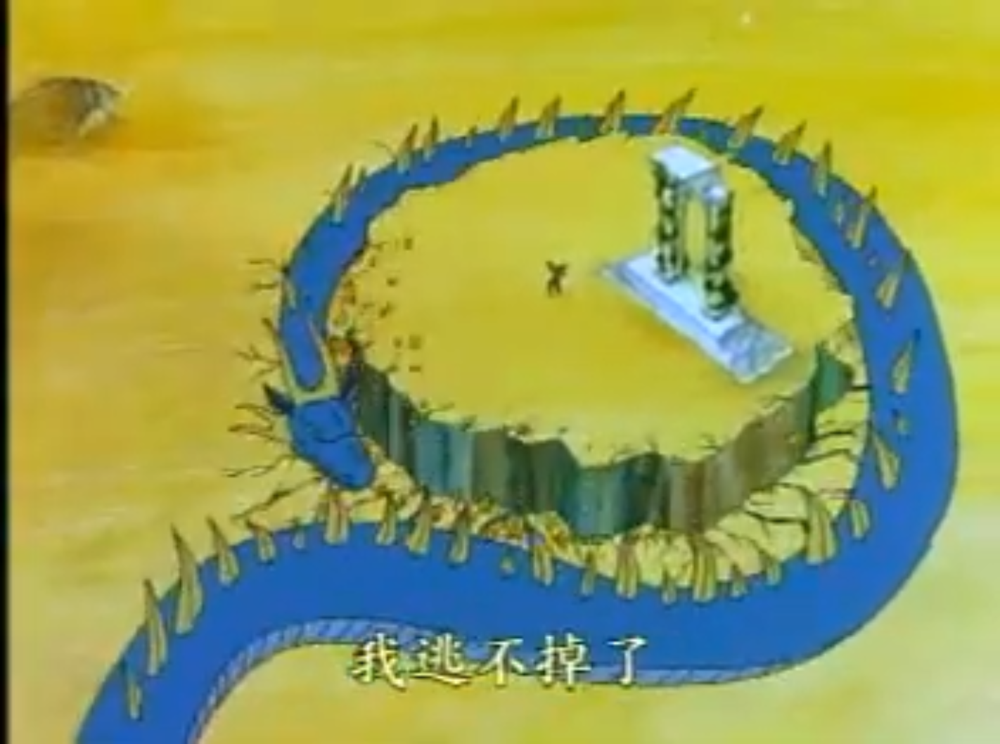
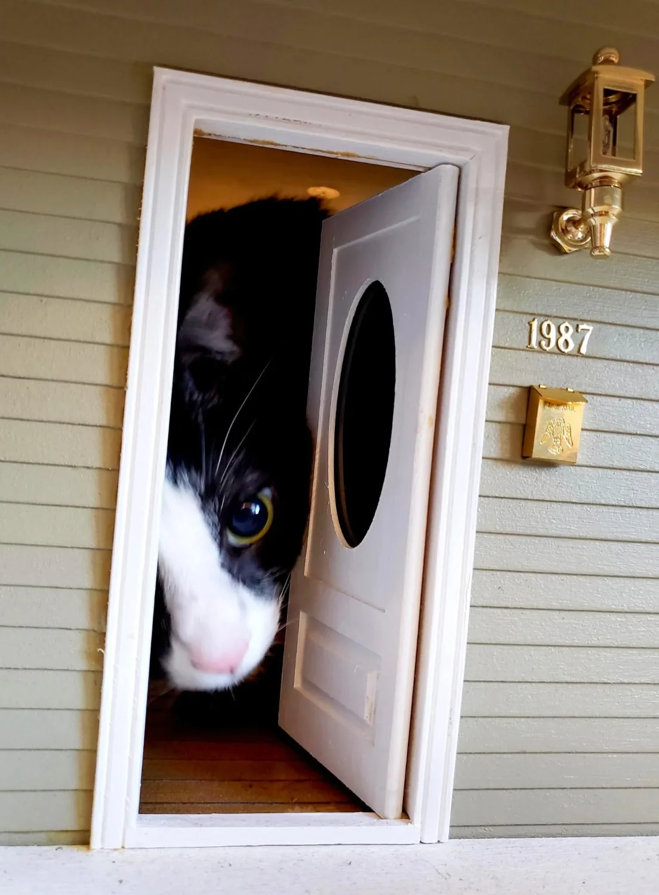

Six in-browser treatments. All zero-cost: SVG filters + a CSS overlay, applied as a default style — the original loads underneath, hover any tile to see it raw (would be a click in production). My favorite for default is A · Duotone — readable, brand-consistent, retints per theme. D · Bayer and E · Halftone are great for accent posts but get noisy at small sizes.
A.DuotoneLuminance mapped onto a two-color gradient. One filter per theme — the image always agrees with the current palette. Cheap, crisp, scales well.
Simoun

Dusk

Cream
B.Posterize + desaturate3–4 levels per channel, saturation lowered. Keeps the original hues but flattens them into print-like flats. Hint of sepia on the cream tile.
4 lvl · sat 55
4 lvl · hue shift
3 lvl · sepia
C.1-bit thresholdPure black/white. With Simoun this becomes navy-on-parchment via screen blend. Aggressive but unmistakeable — best as an opt-in for memes and pixel art.
1-bit
1-bit · screen
1-bit
D.Bayer 4×4Ordered dither pattern overlaid on a posterized image. The closest CSS-only emulation of real Floyd–Steinberg without going to canvas. Gets the crunchy retro feel.
Bayer 4×4
Bayer 4×4
Bayer 4×4
E.Halftone dotsNewsprint-style. A radial-gradient grid multiplied over a posterized image. Very printable; very vaporwave-record-sleeve.
Halftone
Halftone
Halftone
F.CRT scanlinesPosterized + horizontal scanlines + vignette. Reads more "old TV broadcast" than dither, but pairs well with the FB-image / video-still meme aesthetic.
CRT
CRT
CRT
In feed
How A · Duotone reads as the default attachment treatment, with a small badge telling the user the image is stylized. Click to view raw.
orbit@orbit@spacebear.net · 4m
found in the magic flute VCD. how is this so beautiful.
 Simoun
Simoun